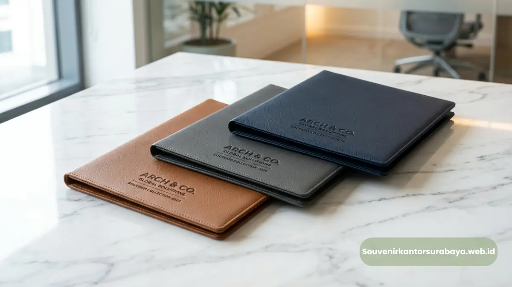

Map folder kulit sintetis eksklusif sebagai perlengkapan rapat kerja korporat di Surabaya.
- Apa Itu Map Folder Kulit Sintetis untuk Rapat Kerja?
- Mengapa Map Folder Kulit Sintetis Penting untuk Rapat Kerja?
- Bagaimana Map Folder Kulit Sintetis Meningkatkan Citra Perusahaan?
- Apa Saja Keunggulan Map Folder Kulit Sintetis Dibanding Map Biasa?
- Apakah Map Folder Kulit Sintetis Cocok untuk Semua Jenis Rapat?
- Apa Saja Faktor yang Perlu Diperhatikan Sebelum Memesan?
- Apa Saja Kesalahan Umum Saat Memesan Map Folder Kulit Sintetis?
- Bagaimana Cara Memesan Map Folder Kulit Sintetis Custom Logo di Surabaya?
Map folder kulit sintetis untuk rapat kerja adalah map dokumen berbahan kulit sintetis (PU/PVC) yang dipakai perusahaan di Surabaya sebagai perlengkapan meeting sekaligus souvenir korporat.
Map ini menampung dokumen, kartu nama, dan alat tulis dalam satu tempat yang rapi dan terlihat profesional. Sebagai vendor map folder kulit sintetis rapat kerja Surabaya, souvenirkantorsurabaya.web.id menyediakan produk ini lengkap dengan opsi custom logo perusahaan.
- Map folder kulit sintetis tahan lebih lama dibanding map kertas atau karton biasa.
- Cocok dipakai saat rapat internal, rapat dengan klien, maupun seminar kerja.
- Bisa dicetak logo perusahaan sebagai identitas dan souvenir korporat.
- Tersedia berbagai model: dengan kalkulator, notes, hingga slot kartu nama.
- Dapat dipesan dalam jumlah besar untuk kebutuhan acara kantor di Surabaya.
Apa Itu Map Folder Kulit Sintetis untuk Rapat Kerja?
Map folder kulit sintetis adalah map dokumen yang dilapisi bahan sintetis menyerupai kulit asli, dirancang untuk menampung kertas kerja, laptop tipis, hingga alat tulis dalam satu unit yang ringkas. Berdasarkan pengamatan umum di industri percetakan dan souvenir korporat, permintaan map folder kulit sintetis di kota-kota besar seperti Surabaya cenderung meningkat menjelang periode rapat kerja tahunan dan musim seminar korporat pada kuartal awal dan akhir tahun.
Fungsi utamanya bukan sekadar wadah dokumen. Map ini menjadi representasi citra perusahaan saat dibawa ke ruang rapat, baik untuk internal maupun saat bertemu klien dan mitra bisnis. Bahan kulit sintetis dipilih karena memberikan kesan formal dan rapi, namun dengan biaya produksi yang lebih efisien dibanding kulit asli.
Mengapa Map Folder Kulit Sintetis Penting untuk Rapat Kerja?
Map folder kulit sintetis penting karena menjaga dokumen tetap rapi, memperkuat citra profesional perusahaan, dan berfungsi ganda sebagai media branding saat logo dicetak di permukaannya.
Bagi perusahaan yang rutin mengadakan rapat internal maupun pertemuan dengan klien, kebutuhan map folder yang tahan lama dan terlihat presentable menjadi bagian dari standar operasional yang tidak bisa diabaikan.
Selain aspek fungsional, map folder juga sering dijadikan bagian dari paket seminar kit atau meeting kit yang dibagikan kepada peserta rapat, pelatihan, maupun gathering korporat. Dengan begitu, satu produk bisa memenuhi dua kebutuhan sekaligus: alat kerja dan media promosi perusahaan.
Baca Juga
Bagaimana Map Folder Kulit Sintetis Meningkatkan Citra Perusahaan?
Map folder kulit sintetis dengan logo perusahaan yang tercetak rapi memberi kesan konsisten dan terorganisir di mata klien maupun mitra bisnis. Ketika seluruh tim membawa map dengan desain seragam saat rapat kerja atau presentasi, hal ini menciptakan kesan branding yang solid dan menunjukkan bahwa perusahaan memperhatikan detail hingga ke perlengkapan pendukung sekalipun.
Apa Saja Keunggulan Map Folder Kulit Sintetis Dibanding Map Biasa?
Keunggulan utama map folder kulit sintetis adalah ketahanannya terhadap air dan gesekan, tampilannya yang lebih elegan, serta fleksibilitas desain untuk custom logo dibanding map kertas atau karton konvensional. Berikut beberapa perbandingan yang umum menjadi pertimbangan tim procurement kantor.
- Ketahanan bahan: kulit sintetis lebih tahan lecek dan robek dibanding map kertas.
- Tampilan visual: permukaan glossy atau doff pada kulit sintetis memberi kesan premium.
- Kapasitas simpan: banyak model dilengkapi slot dokumen, kartu nama, dan pena.
- Reusable: map ini dapat dipakai berulang kali untuk berbagai rapat, tidak sekali pakai.
- Media branding: permukaan kulit sintetis mudah dicetak logo dengan teknik embos atau sablon.
Apakah Map Folder Kulit Sintetis Cocok untuk Semua Jenis Rapat?
Map folder kulit sintetis pada umumnya cocok untuk berbagai jenis rapat kerja, mulai dari rapat internal harian, rapat dengan klien, hingga seminar atau pelatihan korporat berskala menengah hingga besar. Fleksibilitas desain dan ukuran membuatnya dapat disesuaikan dengan kebutuhan spesifik, misalnya menambahkan slot untuk tablet atau dokumen berukuran folio bagi perusahaan yang membutuhkan kapasitas lebih besar.
Apa Saja Faktor yang Perlu Diperhatikan Sebelum Memesan?
Sebelum memesan map folder kulit sintetis untuk rapat kerja, perusahaan umumnya perlu memperhatikan jumlah kebutuhan, desain logo yang akan dicetak, model map yang sesuai fungsi, serta estimasi waktu produksi agar sesuai jadwal acara.
Perencanaan yang matang membantu menghindari keterlambatan, terutama jika pemesanan dilakukan mendekati tanggal rapat atau seminar korporat.
- Jumlah pemesanan: sesuaikan dengan jumlah peserta rapat atau karyawan yang akan menerima.
- Desain logo: siapkan file logo dengan resolusi baik agar hasil cetak maksimal.
- Model map: pilih apakah membutuhkan slot kalkulator, notes, atau kartu nama.
- Waktu produksi: umumnya membutuhkan waktu tertentu tergantung jumlah dan tingkat kerumitan desain, sehingga sebaiknya dipesan lebih awal.
- Anggaran: biaya dapat bervariasi tergantung model, ukuran, dan jumlah pesanan.
Apa Saja Kesalahan Umum Saat Memesan Map Folder Kulit Sintetis?
Kesalahan umum yang sering terjadi antara lain memesan terlalu mendekati tanggal acara, tidak menyiapkan file logo berkualitas tinggi, dan tidak mengecek terlebih dahulu contoh bahan sebelum produksi massal. Beberapa perusahaan juga kerap melewatkan konfirmasi ukuran dan warna sehingga hasil akhir tidak sesuai ekspektasi tim.
Untuk menghindari hal tersebut, sebaiknya perusahaan melakukan koordinasi lebih awal dengan tim procurement dan menyiapkan spesifikasi kebutuhan secara detail sebelum proses pemesanan dimulai.
Bagaimana Cara Memesan Map Folder Kulit Sintetis Custom Logo di Surabaya?

Tampilan map folder kulit sintetis dengan pilihan custom logo perusahaan yang rapi dan elegan.
Cara memesan map folder kulit sintetis custom logo di Surabaya umumnya dimulai dengan menghubungi penyedia, menentukan model dan jumlah, mengirim file logo, lalu menunggu proses produksi hingga pengiriman.
souvenirkantorsurabaya.web.id melayani proses ini secara terintegrasi, mulai dari konsultasi desain hingga pengiriman ke lokasi kantor.
Bagi perusahaan di Surabaya yang membutuhkan map folder kulit sintetis untuk rapat kerja, kunjungi souvenirkantorsurabaya.web.id untuk berkonsultasi mengenai model, desain custom logo, dan estimasi jumlah pesanan sesuai kebutuhan tim Anda.
Tim kami siap membantu proses dari awal hingga produk siap digunakan pada rapat kerja berikutnya.

Hawa Nadira
Tim penulis CorporateGifts ID berfokus pada strategi souvenir kantor, merchandise korporat, dan inovasi brand untuk klien B2B.
Keahlian: Branding perusahaan, produksi souvenir, paket event, desain materi promosi.
Artikel Terkait

Perbedaan Kulit Asli dan Sintetis pada Souvenir Kantor Eksekutif
Panduan komparasi material kulit asli vs sintetis untuk menentukan pilihan souvenir kantor eksekutif yang sesuai budget dan daya tahan.
Baca Selengkapnya
Paket Seminar Kit Lengkap untuk Kantor di Surabaya
Paket seminar kit kantor Surabaya adalah satu paket perlengkapan acara yang biasanya terdiri dari lanyard, id card, notebook, dan pulpen.
Baca Selengkapnya
Souvenir Kantor Surabaya
Vendor penyedia barang promosi, seminar kit, dan merchandise korporat profesional dengan layanan kustom logo di Surabaya.
Baca Selengkapnya